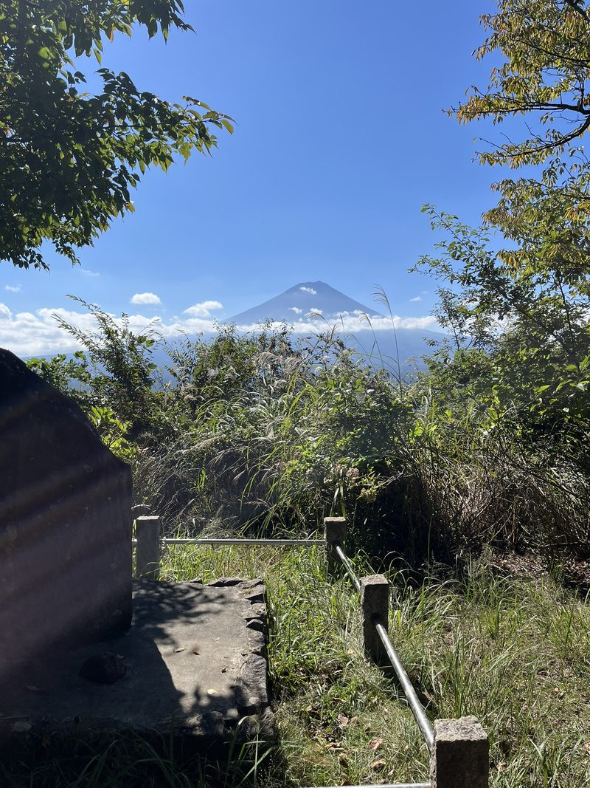
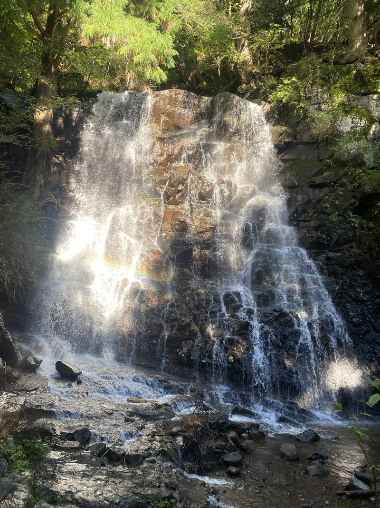
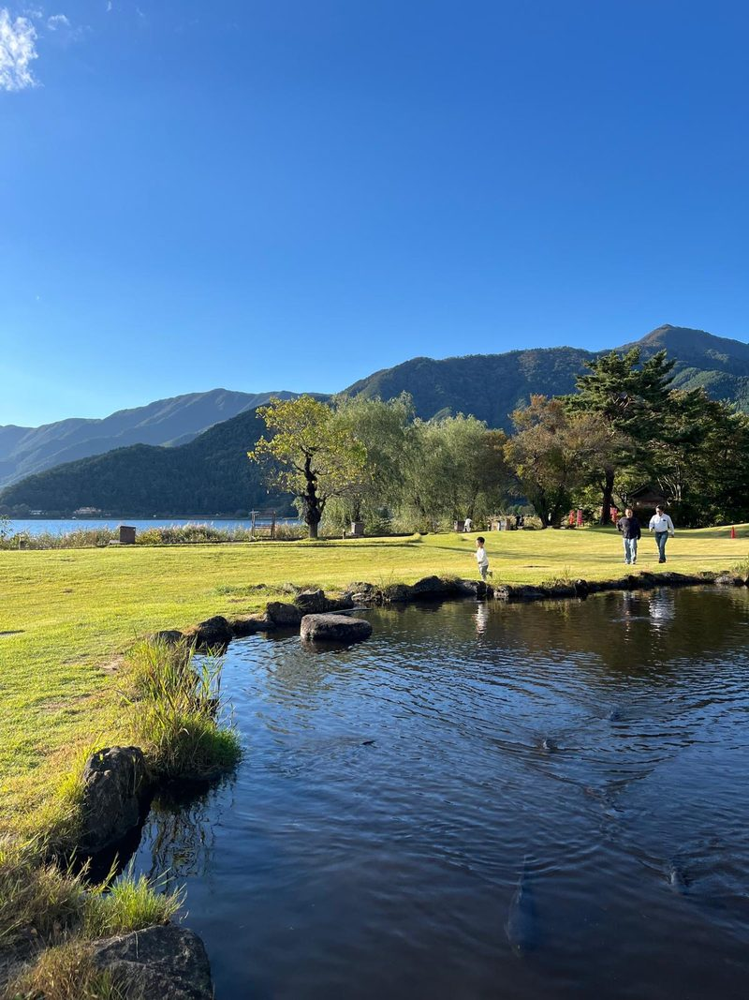
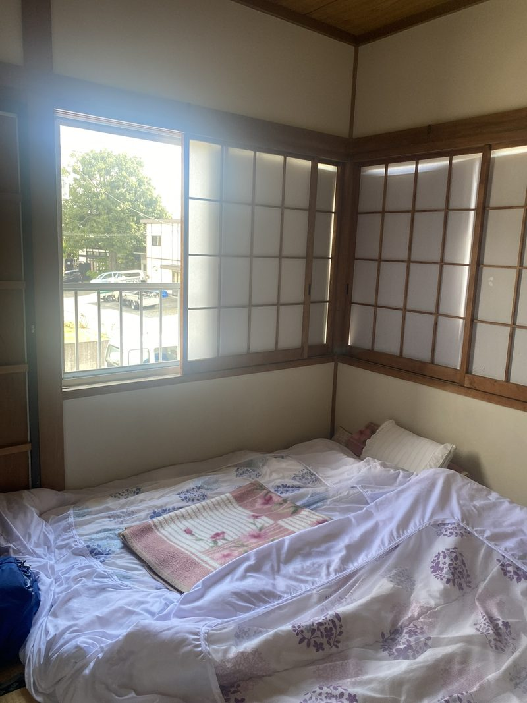
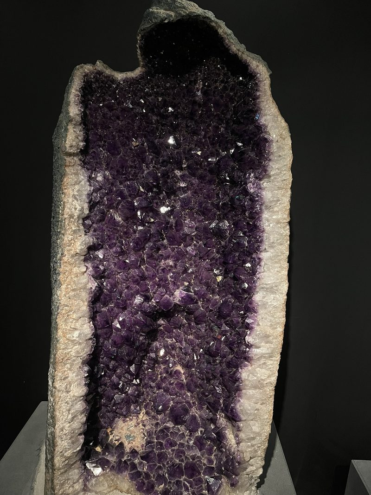
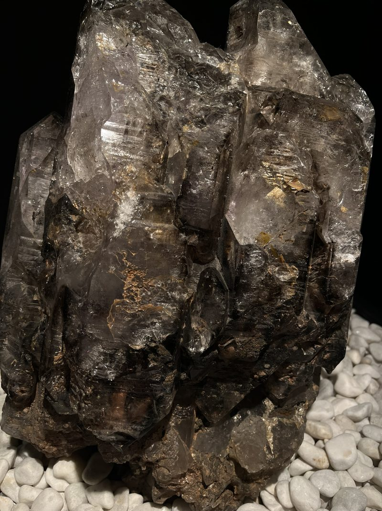
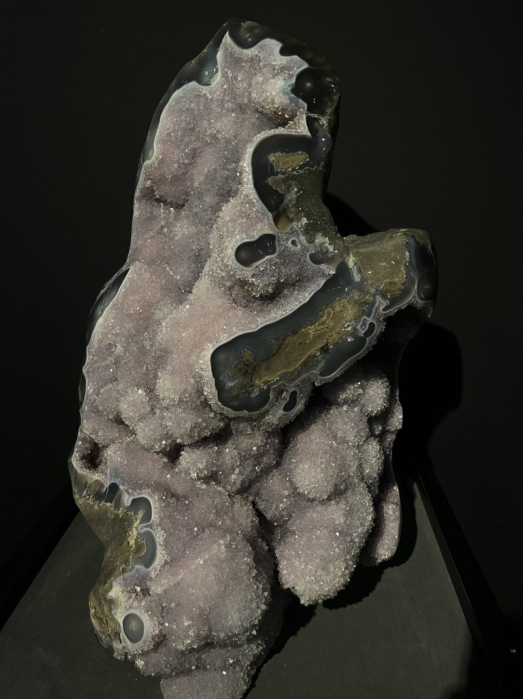

Je kunt je een grote tante voelen in Japan: de gangetjes zijn smal, het plafond is laag – maar door Mount Fuji word je weer even terug op je miezerige voeten gezet. Constant torent ze daar boven ons uit, de meesteres. De aanwezigheid is altijd voelbaar, zelfs achter de dikke wolken, naast een pretpark met achtbanen dat er nietig van wordt. Ze is meer dan de grootste berg van het land (3.776 meter): een nationaal symbool, volgens shinto de plek waar de goden wonen, dé pelgrimstocht. En ze trekt aan je als een geurend altaar; op elke mogelijkheid kijken we ernaar. Hangend uit het raam en het hoofd naar het zuiden wendend, omkijkend in een wandeling naar het station, bovenop de omliggende bergen.
Masaki
We komen per bus aan op een station waar rijen rechthoekige auto’s staan opgesteld. Eén ervan is voor ons; meneer Masaki haalt ons op voor een rit van twee minuten. We verblijven in het huis waar hij en zijn dochter wonen en al lachend en bijna verontschuldigend leidt hij ons rond. De rommelige keuken, de badkamer die volledig uit douche bestaat, met een putje midden in de ruimte, en onze traditionele slaapkamer. Een kotatsu: een laag tafeltje in de hoek met een kussen aan elke opening. De rieten matten onder je voeten die opbollen en je een zetje meegeven bij elke stap. Slapen op de vloer op een dunne futon. Tropische geluiden waaien ’s nachts uit de shoji, schuifbare rijstpapieren ramen, naar binnen. Het is sober en prachtig tegelijk.
Het is nog wachten tot het wat meer behelpen wordt: ook hier is alles in het Engels. Je zou bijna verlangen naar het niet begrijpen, niet alles hoeven lezen. Japanners blijken taalvaardig en proper (denk aan de al beschreven toiletten, de herinneringen om vaak je handen te wassen en de ramen open te zetten, en aparte slippers voor sanitair en wonen), en ook nog duurzaam. Afval moet gescheiden worden, maar niet alle categorieën zijn beschikbaar, en vervolgens staan er nergens afvalbakken. De oplossing is nog niet gevonden; regelmatig zijn we zo genoodzaakt de circulaire stroom te onderbreken. Wat doe ik bijvoorbeeld met het flesje van mijn zwarte ijskoffie (Eindelijk! Leest u mee, Albert Heijn?) als het op is?
‘Tax the rich’, biedt een presidentskandidaat op een poster als oplossing aan. Ondertussen worden wij onrustig van het nieuws dat er beren rond de paden lopen waar wij ons op willen wagen. We doen het uiteindelijk toch, zonder belletje dat ze op afstand moet houden, maar zien vooral roofvogels en spinnen. Spinnen die het lokale alfabet op zich dragen en webben van meters spannen en met elkaar verbinden, waardoor ze hele elektriciteitsnetwerken controleren.
Klimmen
Klimmen zul je, Fuji maant je ertoe. Fuji excuus: je bent te hoog, maar de in verhouding nietige broertjes en zusjes durven we wel aan. Al overtoepen we ons de eerste dag naar een waterval; in Tokyo deden we niet anders dan lopen, maar dan plat, voortgestuwd door de massa. Hier is bijna niemand, op het toeristische vlonderplatform na, en moet je jezelf omhoog trekken. De tweede dag is het mooist: helder, vól zicht op de trekpleister. Bergop dicht bos, weinig dieren. Daar is het wat koeler en beschut.

Ook bovenop kun je betalen of iets offeren voor good fortune. Na ongeluk in Tokyo is de toekomst voor E.L.K. nu goedgezind. De schommel met uitzicht onder rustgevende xylofoongeluiden laten we links liggen. Het bergbos is kalm, de lucht reinigend, de tocht spierpijnverwekkend.



In het dal scheiden voor het eerst onze wegen en zink ik neer in een park aan het meer, met volledig ingepakte vissers tussen drie soorten bomen, waar ik alleen maar hoef te liggen om de spieren te geven wat ze willen. De zon doet aan de eerste warme lentedag denken, maar het is een nazomerdag. De bladeren zijn nog niet mijn bed. Het vuurrood vult mijn dichte oogleden en toch klinkt er weer ergens pianomuziek. Maar zonder zon is het rillen, Fuji is zo foetsie als E.L.K. en ik zoek de laatste weer op. Zonder de van wax gemaakte voorbeeldmaaltijden aan de muur willen we het niet, en we maken zelf eens onze noedels klaar.
Naast bergen zijn ze hier gespecialiseerd in het verzamelen van edelstenen en het verwerken ervan tot sieraden, en ze exposeren het ook. Onder Harry Potter-symfonieën, zoekend naar de steen der wijzen, loop je langs tientallen soorten bewerkte mineralen en andere natuurfenomenen als voorproefje voor de winkel waar de ogen gaan schitteren van blinkende pracht. Ze maken er ook schermen van, een kunstwerk van een meubelstuk waarvan ik er langzamerhand een in mijn huis wil.



Overstappen
Dan de schok. Ondergetekende Japan-amateur dacht dat hij in Zuid-Amerika was en zonder reservering een willekeurige bus kon pakken die vast wel ergens zou belanden. Maar zo werkt dat niet in het punctuele, volgeboekte vakantieweekend van Japan. En toch móéten we naar Takayama voor de traditionele herfstfeesten en daarom zijn we niet alleen vier overstappen rijker, maar ook een hele avond plannen. Gefronste blikken en vier beeldschermen met ledlicht in het schemerige kamertje met een koel windje; de warme avond gaat aan ons voorbij. E.L.K. zet haar powermodus aan en prevelt zinnetjes als ‘dat wil ik niet’ en ‘maar deze is beter dan deze’, en met geluk weten we nog iets te boeken: de reis van drie uur wordt er een van twaalf.
Gelukkig is het een prachtige route, zonnig en met helder zicht op de constant groene reuzen om ons heen, in een wat surrealistische waas die je op vreemde stations tussen vreemde mensen kunt hebben. Automatische vertaalmachines bij de loketten, alcoholvrij sake-ijs, mechanische systemen waardoor je altijd binnen een paar minuten een bord dampende noedels voor je neus kunt hebben, verstelbare hoofdkussentjes, snackkarretjes in het gangpad. Soms schieten we met honderden kilometers per uur door tunnels.
Ondertussen kan ik doorlezen: Murakami, Kawabata. Ik tref veel fenomenen die alleen het land eigen zijn, zoals geisha’s: kunstenaar, gezelschap, entertainer, vertellers, muzikanten (prostituees?). In elk pakketje bladzijdes komt er wel een zelfmoord aan te pas. Japanners zijn tolerant, verheffen het soms tot esthetische ervaring. En dan vooral ‘shinju’, dubbele zelfmoord: ooit een soort laatste liefdesbetuiging, nu een pact tussen onbekende individuen. In de samurai-tijd boorden krijgers al een zwaard door hun buik als ze hun heer niet voldoende konden dienen (hara-kiri). Toen de keizer viel in 1912, volgde een legendarische generaal uit loyaliteit. En in WOII gingen Japanners liever dood dan op te geven (kamikaze). En nu is het een diep ongelukkig land met veel mensen die ervoor kiezen om te sterven. Amae: geen geluk zonder afhankelijkheid, een positieve blik van de ander.
We dwalen door het hoofd, en zo gaat alles voorbij.
Na een onboffelijke laatste busrit met een scheurende chauffeur, files in de Japanse Alpen en een onverwachte overstap kloppen we tegen negen uur ’s avonds aan bij het gasthuis van Don. De nacht is van ons.